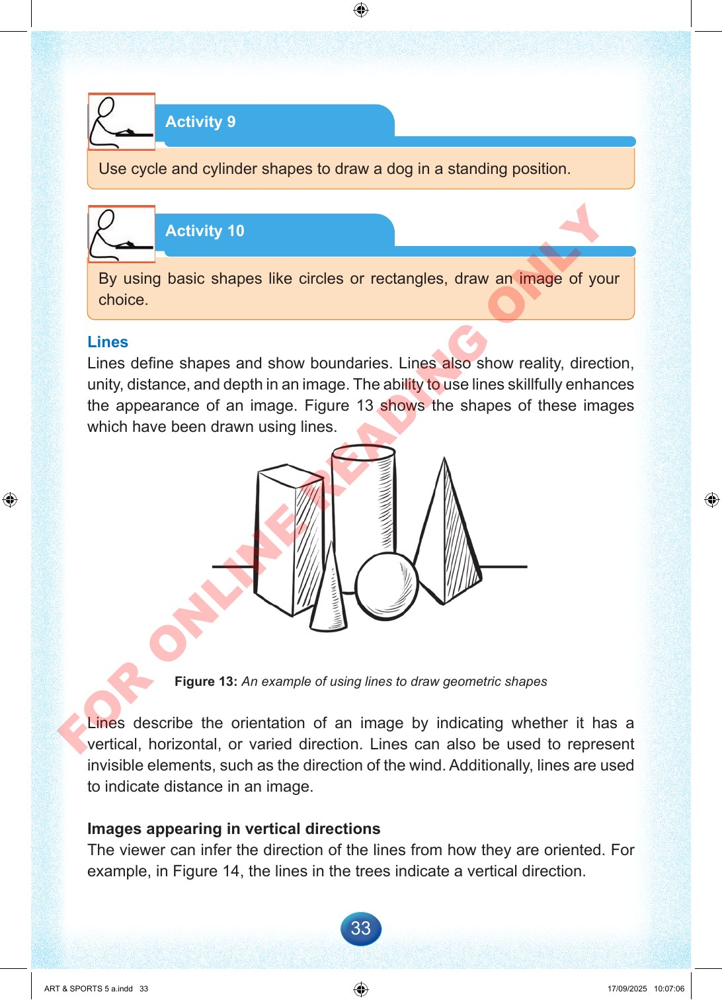

33
Activity
9
Use
cycle
and
cylinder
shapes
to
draw
a
dog
in
a
standing
position.
Activity
10
By
using
basic
shapes
like
circles
or
rectangles,
draw
an
image
of
your
choice.
Lines
Lines
define
shapes
and
show
boundaries.
Lines
also
show
reality,
direction,
unity,
distance,
and
depth
in
an
image.
The
ability
to
use
lines
skillfully
enhances
the
appearance
of
an
image.
Figure
13
shows
the
shapes
of
these
images
which
have
been
drawn
using
lines.
Figure
13:
An
example
of
using
lines
to
draw
geometric
shapes
Lines
describe
the
orientation
of
an
image
by
indicating
whether
it
has
a
vertical,
horizontal,
or
varied
direction.
Lines
can
also
be
used
to
represent
invisible
elements,
such
as
the
direction
of
the
wind.
Additionally,
lines
are
used
to
indicate
distance
in
an
image.
Images
appearing
in
vertical
directions
The
viewer
can
infer
the
direction
of
the
lines
from
how
they
are
oriented.
For
example,
in
Figure
14,
the
lines
in
the
trees
indicate
a
vertical
direction.
ART
&
SPORTS
5
a.indd
33
ART
&
SPORTS
5
a.indd
33
17/09/2025
10:07:06
17/09/2025
10:07:06
F
O
R
O
N
L
I
N
E
R
E
A
D
I
N
G
O
N
L
Y